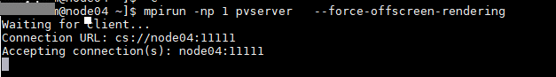
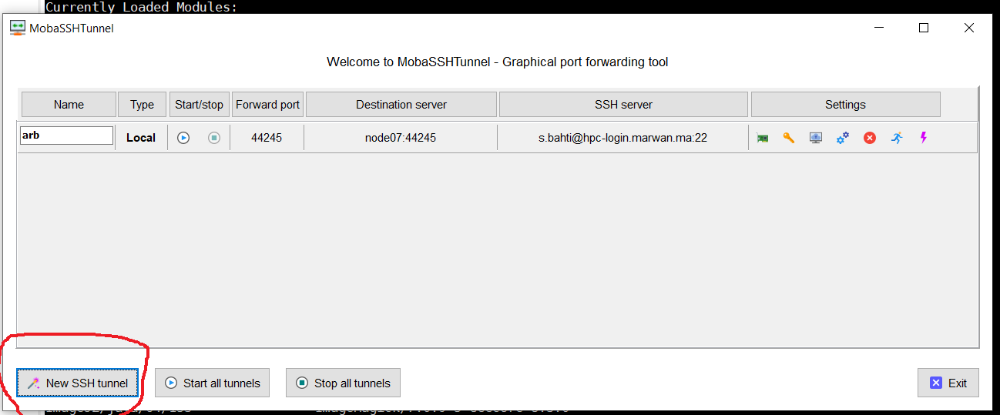
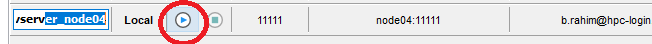
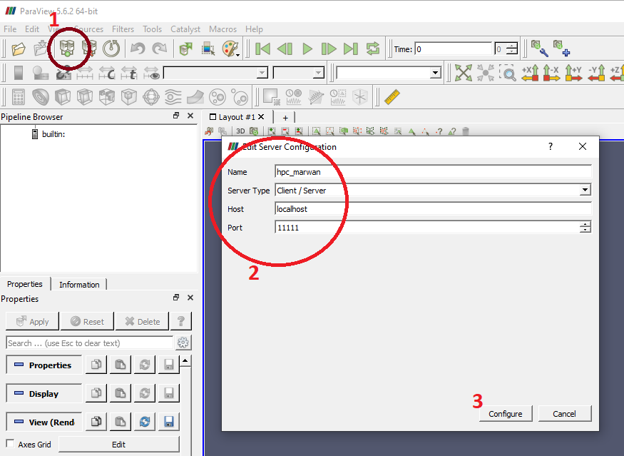
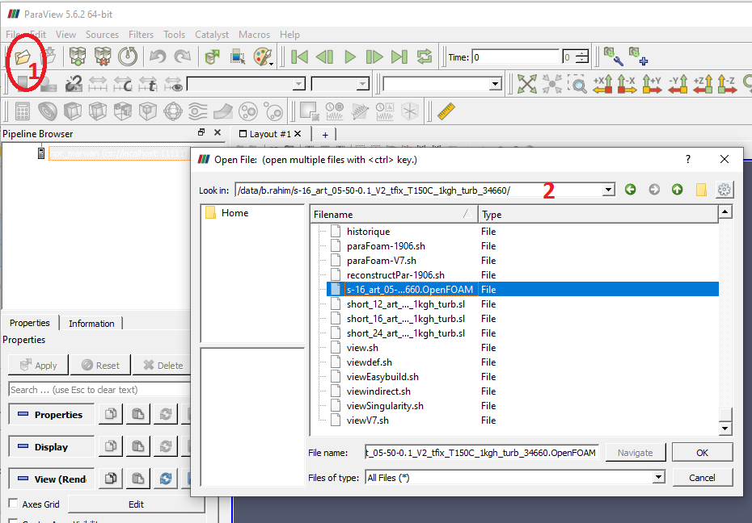
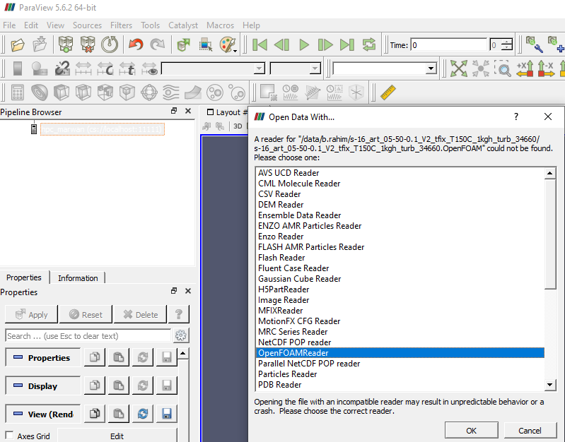
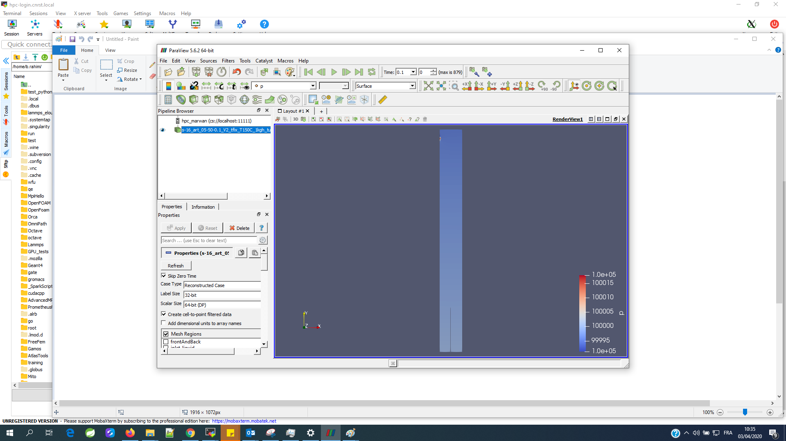

L’application ParaView
- Ce tutoriel vous montre comment exécuter ParaView avec le client fonctionnant sur votre bureau et les tâches pvserver s’exécutant en parallèle sur le cluster HPC-Marwan. Ce tutoriel suppose que vous avez déjà installé une copie de ParaView sur votre pc . Si ce n’est pas le cas, veuillez consulter la page principale de ParaView pour les instructions de téléchargement (le lien de paraview client correspendant à la version installée sur HPC-Marwan est le suivantlien). Si vous utilisez Windows, vous devrez installer un logiciel supplémentaire, par exemple Mobaxterm
, pour configurer les tunnels SSH.
Etapes de configuration client-serveur :
Allocation de ressource :
Sur la machine de connexion hpc-login.marwan.ma, utilisez la commande appropriée pour allouer un nœud de calcul libre (srun, salloc ). Vous devez utiliser les différents d’option pour spécifier les détails de la commande tels que le nombre de nœuds, les limites de temps, la partition des nœuds à utiliser. Par exemple :
srun -N 1 -n 1 -p defq --pty bash –i
L’option ``defq`` vous permet d’utiliser la partition par defaut (2h)
Démarrer le(s) serveur(s):
Une fois que les nœuds sont réservés (dans les prise d’écran, le nœud réservé est : node4 ), vous serez connecté à une ligne de commande interactive sur le premier nœud du travail par lots. Charger le module paraview, et lancer le serveur pvserver souhaitées. Par exemple :
Par defaut Paraview utilise le port 11111
Créer un tunnel SSH:
Afin de créer des tunnels SSH vers ou depuis votre système Windows, vous aurez besoin d’un logiciel supplémentaire. Nous vous recommandons d’utiliser Mobaxterm comme client SSH sur Windows. Les suivantes vous montrent comment vous pouvez créer un tunnel ssh entre votre machine, la machine hpc-login.marwan.ma et le nœud de calcul réservé auparavant (node4)
 Connecter le client ParaView :
Une fois que vous avez un pvserver en cours d’exécution sur le cluster, vous pouvez vous connecter à partir de votre client de bureau. Ouvrez ParaView sur votre bureau (si vous ne l’avez pas déjà fait fonctionner). Ensuite, cliquez sur l’icône Connexion, ou sélectionnez Fichier -> Connexion dans les menus.
Cela ouvrira le dialogue de connexion. La première fois que vous vous connecterez à partir de votre client, vous devrez configurer un nouveau serveur. Vous ne devriez avoir à le faire qu’une seule fois ; la configuration sera enregistrée et ajoutée à la liste.
Entrez les valeurs comme indiqué ici pour configurer la connexion. Le “Nom” peut être tout ce que vous souhaitez utiliser pour identifier cette configuration à l’avenir.
Vous choisissez le dossier de travail( par défaut , il va pointer sur le dossier /home/login, il faut monter à / puis choisir /data/login)
Vous pouvez choisir un lecteur (OpenFoam) pour simuler vos données, voir la figure suivante :
A la fin de vos simulation, vouliez arrêter le tunnel ssh et fermer la session ssh vers le nœud de calcul réservé (exit)
